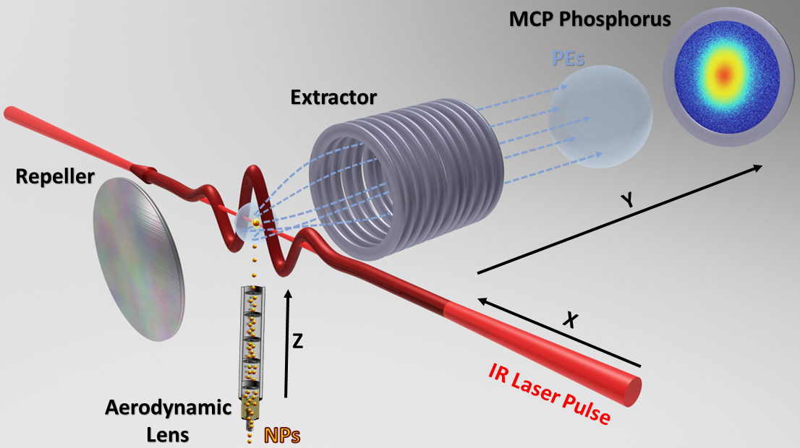

Active · 2016 –
Strong-field physics of nanoparticles
Photoelectron emission from nanoparticles in intense laser fields, where the atomic three-step picture stops predicting the measured cutoff energies.

The question
Above roughly \(10^{13}\) W/cm², a laser field distorts the binding potential enough that electron motion is no longer a small correction. In atoms this regime is well described by the semiclassical three-step model: an electron tunnels out, is accelerated by the field, and can be driven back to rescatter from the parent ion. That model fixes the rescattering cutoff at about ten times the ponderomotive energy, which is what makes it testable.
Nanoparticles break each step. Emission occurs from an extended curved surface rather than a point. The field an electron experiences is the driving field plus the plasmonic field the particle itself radiates, which is stronger, differently shaped, and shifted in phase. And because many electrons are released at once, they interact with each other and with the charge left behind.
The question is which features of a measured photoelectron spectrum still report on single-electron dynamics, and which are collective.
Approach
We extend the three-step model rather than replace it. Electrons are released by quantum-mechanical tunneling, propagated from the surface to the detector by sampling classical trajectories, and allowed to rescatter and recombine at the surface. The induced field is obtained from Mie theory for the particle's own geometry and optical constants.
Each step is more involved than in the atomic case, and the model has to carry three effects that gas-phase targets do not have: Coulomb repulsion between emitted photoelectrons, the residual charge accumulating on the nanoparticle, and the interaction of each electron with the induced plasmonic field.
Results
We simulated momentum distributions from gold nanoparticles of 5 to 70 nm diameter, driven by short pulses at peak intensities of \(8.0\times10^{12}\) and \(1.2\times10^{13}\) W/cm², in support of experiments at the James R. Macdonald Laboratory.
Two findings stand out. Measured and simulated cutoff energies exceed the gas-phase atomic result by about two orders of magnitude. And the balance between the two emission pathways is inverted: direct photoelectrons reach up to 93% of the rescattered cutoff energy, compared with roughly 20% in atomic targets.
That combination — high energies produced predominantly by direct emission — suggests nanoparticles as compact, tunable tabletop sources of fast electrons, which would be useful for high-harmonic generation, electron impact spectroscopy, and femtosecond time-resolved scanning tunneling microscopy.
Open problems
Dielectrics and semiconductors. The model was built for metals. Extending it means replacing Fowler–Nordheim tunneling with Ammosov–Delone–Krainov ionization rates, which are appropriate for these materials, and eventually using time-dependent density functional theory for more accurate rates at the surface. This work is in progress with a former REU student, and a manuscript on the breakdown of ponderomotive cutoff scaling in dielectric nanoparticles is in preparation.
Plasmonic dynamics under strong fields. Our simulations predict that heavy photoemission weakens the plasmonic field enhancement. That prediction is testable using the imaging method developed in the near-field imaging project, which would let the weakening be followed in real time.
For a student. The trajectory calculation is the accessible entry point. It is classical mechanics in a field that can be written down, it runs on a laptop before it needs the server, and deciding whether a spectrum is converged — enough trajectories, enough emission phases, enough of the surface sampled — teaches numerical analysis that a course does not.
Links
- Generation of fast photoelectrons in strong-field emission from metal nanoparticles — Nanophotonics 14, 1355 (2025)
- Enhanced cutoff energies for direct and rescattered strong-field photoelectron emission of plasmonic nanoparticles — Nanophotonics 12, 1931 (2023)
- Strong-field ionization of plasmonic nanoparticles — Phys. Rev. A 106, 033103 (2022)
- Strong-field control of plasmonic properties in core–shell nanoparticles — ACS Photonics 9, 3515 (2022)